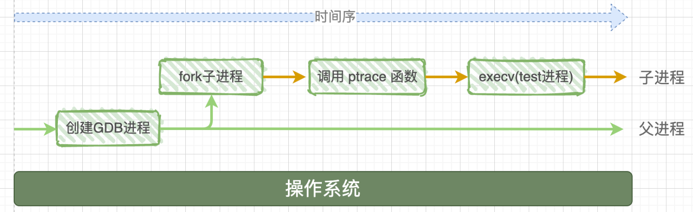
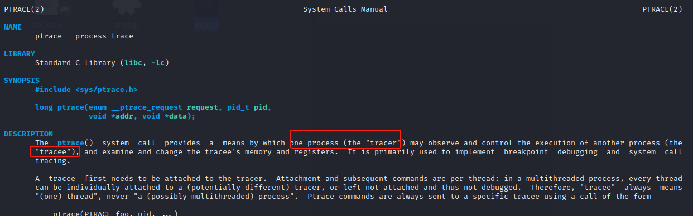
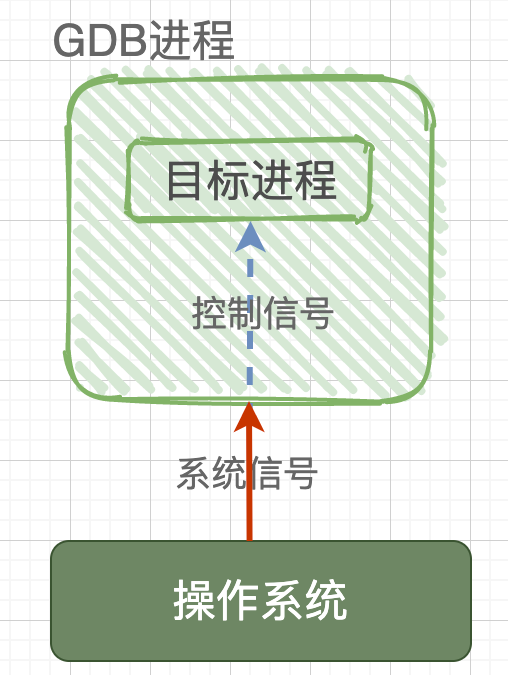
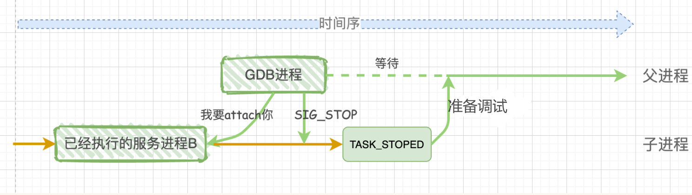
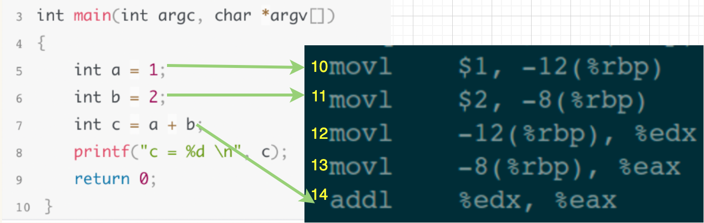
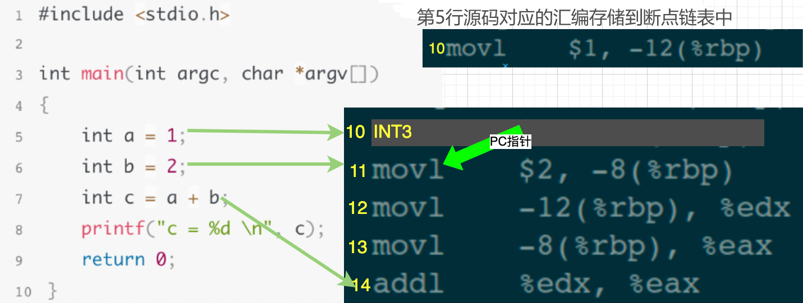
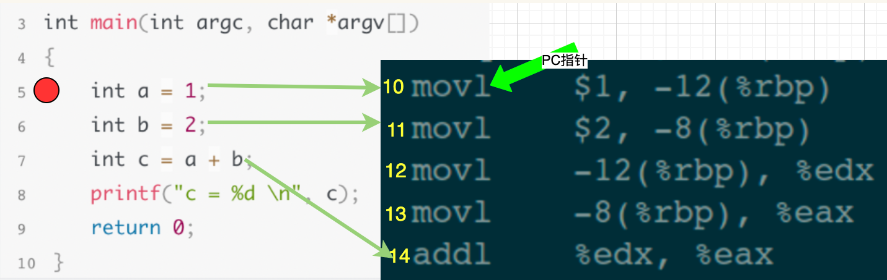

gdb调试原理
用了这么久gdb了，想到竟然没有了解过gdb调试的原理，故在此记录学习。
gdb与被调试程序的关系
1 | gdb ./file |
在我们使用上述指令启动gdb调试一个程序，最终进入调试界面等待用户输入gdb命令的这个过程中，在操作系统中发生了一些复杂的事。
首先系统会启动gdb进程，gdb进程会使用fork()系统调用创建一个子进程，这个子进程会做两件事，见下图：
- 1、调用系统函数ptrace(PTRACE_TRACEME, [其他参数])；
- 用execv加载并执行可执行程序file，这样被调试程序就在子进程中开始执行了

ptrace函数
gdb有强大的调试能力离不开ptrace系统调用函数，ptrace的函数原型如下：
1 |
|
先看看ptrace简介：

在简介中，tracer为调试程序，在gdb调试关系中对应的是gdb进程，tracee为被调试程序。
ptrace系统函数是Linux内核提供的一个用于进程跟踪的系统调用，通过它，gdb进程可以读写被调试进程的指令空间、数据空间、堆栈和寄存器的值，且gdb进程接管被调试进程的所有信号，系统向被调试进程发送的所有信号都会被gdb进程捕获到，这样一来被调试进程就被gdb控制了，达到调试的目的。
gdb.attach是如何实现的？
我们经常使用gdb.attach()的方式调试一个正在运行的进程，那么它的原理是什么呢？
首先回到上面提到的ptrace函数，它的第一个参数是一个枚举类型的值，其中重要的有两个：PTRACE_TRACEME和PTRACE_ATTACH
在上面的被调试程序从头开始执行的情况中，是子进程调用ptrace函数并使用PTRACE_TRACEME参数，表示请求让gdb调试自己。
而对于要调试正在执行的进程B来说，需要在gdb这个父进程中调用ptrace函数，使用的是PTRACE_ATTACH参数。此时gdb会attach（绑定）到正在执行的进程B中，即gdb将进程B收养成为自己的子进程，那么对于进程B来说，它的操作等同于它自己进行了一次PTRACE_TRACEME操作。然后gdb进程会发送SIG_STOP信号给子进程B，子进程B接收到这个信号会暂停执行进入到TASK_STOPED状态，表示已经准备好被调试了。

因此，不论是调试一个新程序还是一个正在执行的进程，通过ptrace系统调用，最终的结果都是：gdb是父进程，被调试程序是子进程，gdb父进程接管子进程的所有信号，并可以查看、修改子进程的内部信息，包括堆栈和寄存器等。
gdb如何实现断点
首先给定下面的程序test.c：
1 |
|
假设在gdb调试的过程中我们执行下面的断点指令：
1 | (gdb) break 5 |

左边的代码对应右边的汇编指令，当执行断点指令break 5的时候，会执行下面的操作：
- 将第5行源码对应的汇编代码存储到断点链表中
- 将第5行源码对应的汇编代码处替换为INT3中断指令

然后当程序运行到INT3中断指令的时候，gdb会在断点链表中查找，发现链表中存储了这行对应的代码，说明这里被设置了断点，因此接下来执行2个操作：
- 将INT3断点替换为断点链表中这行对应的代码
- 将PC指针回退一步，即设置为指向被断点的那一行

那么这个时候下一条要执行的指令就是汇编指令的第10行，即源码第5行。从调试者的角度来看，效果就是程序在第5行的地方被断下来了，接下来就可以使用其他指令进行debug了。